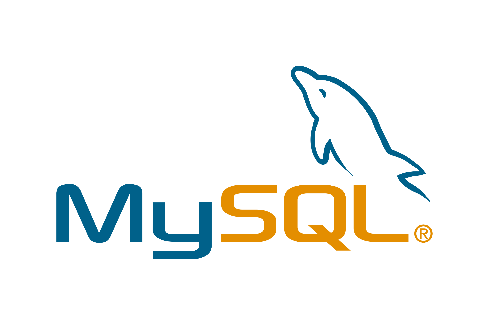
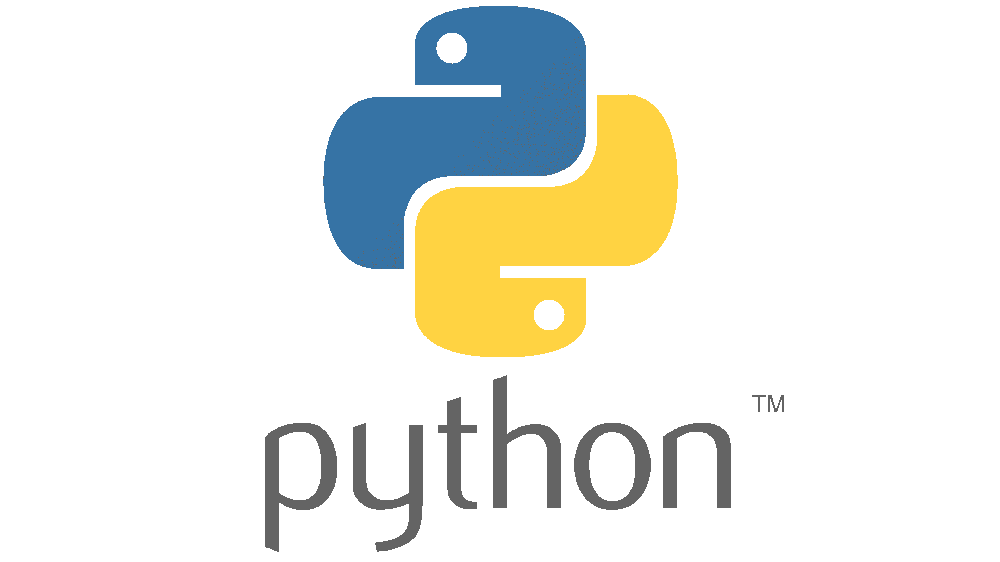
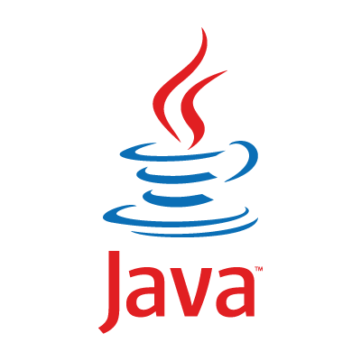
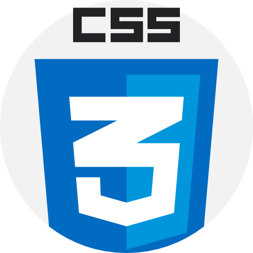
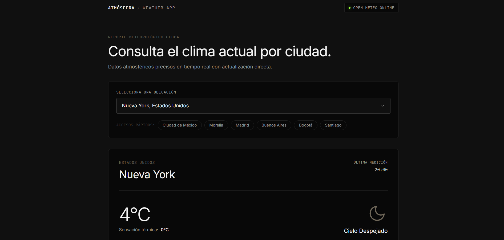
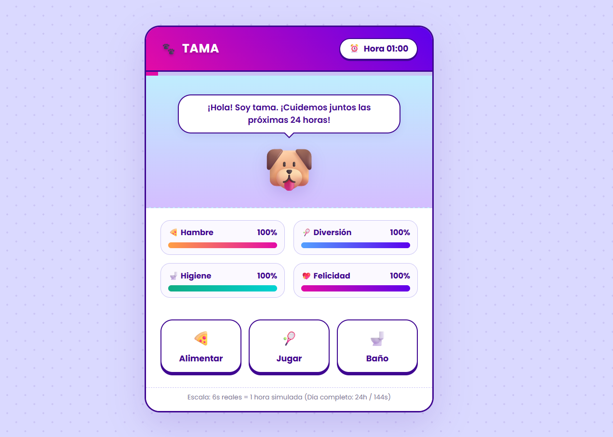
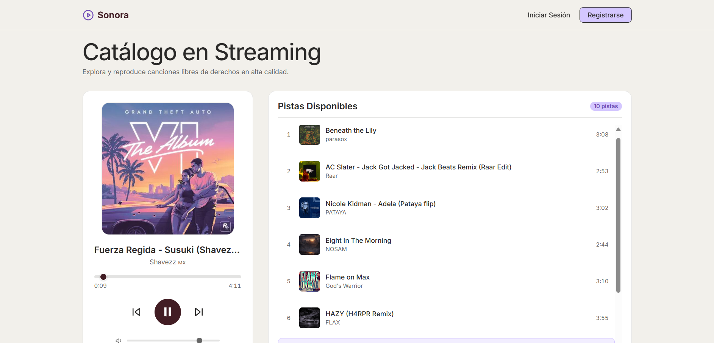
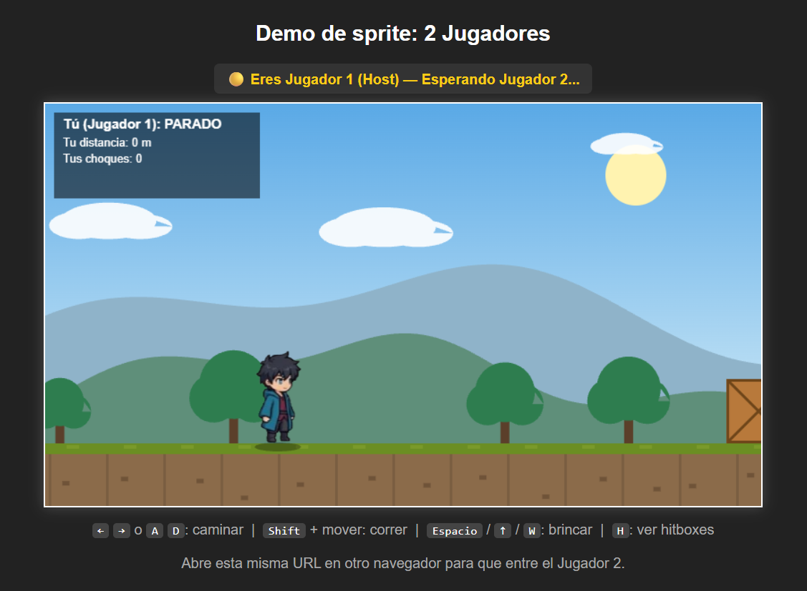
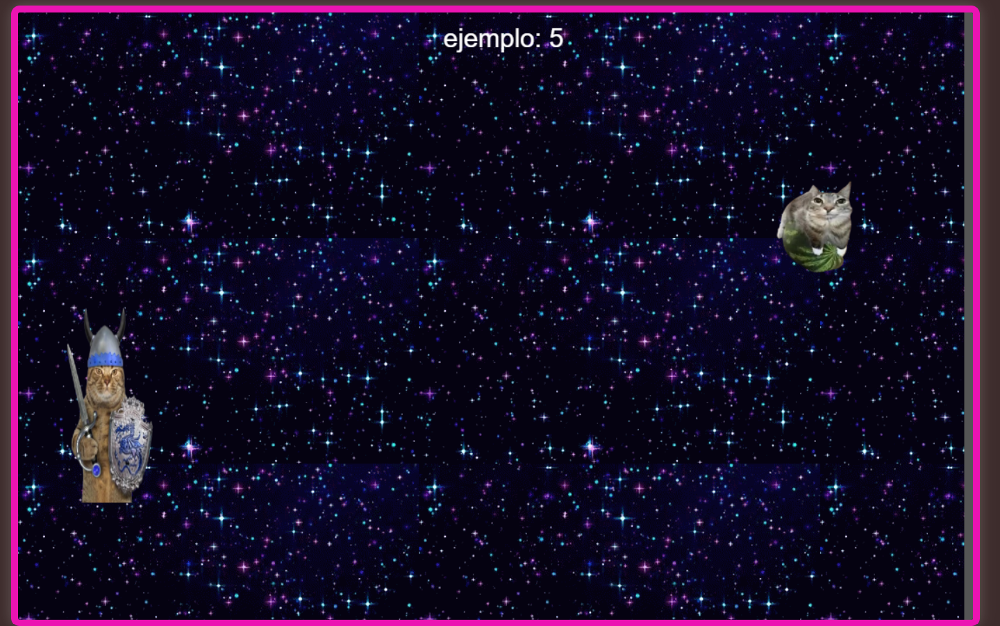

Página de tienda de mascotas
Explora el catálogo, registra ventas como empleado y administra el inventario de productos y mascotas con funciones adaptadas al rol de gerente.
Explorar proyecto ↗Omar Báez — Estudiante de Ingeniería en Sistemas en la UVAQ. Enfocado en desarrollo backend, arquitectura de datos y optimización de algoritmos.
Estudiante de Ingeniería en Sistemas en la Universidad Vasco de Quiroga (UVAQ) en Morelia, Michoacán. Enfocado en desarrollo backend, arquitectura de datos y optimización de algoritmos. Me interesa construir soluciones desde los fundamentos, entendiendo cómo funcionan las cosas por debajo.
Lógica de servidor, APIs y control de flujo con Node.js, PHP y Java.
Modelado relacional, integridad y consultas en PostgreSQL, MySQL y SQL.
Optimización computacional y entornos Unix con Python, Julia y Linux.
Tecnologías orientadas a infraestructura backend, bases de datos relacionales, computación numérica y entornos Linux.

MySQL
Python
Java SQL
SQL JavaScript
JavaScript GitHub
GitHub HTML5
HTML5
CSS
Explora el catálogo, registra ventas como empleado y administra el inventario de productos y mascotas con funciones adaptadas al rol de gerente.
Explorar proyecto ↗
Elige una ciudad y explora su reporte meteorológico en tiempo real, con datos atmosféricos detallados y accesos rápidos para consultar distintas ubicaciones.
Explorar proyecto ↗
Adopta una mascota virtual y acompáñala durante un día completo acelerado: atiende su hambre, diversión e higiene y descubre cómo termina la aventura.
Explorar proyecto ↗
Explora un catálogo en streaming de canciones libres de derechos. Elige una pista, disfruta de su portada y controla la reproducción desde el navegador.
Explorar proyecto ↗
Comparte la sala con otra persona abriendo el proyecto en dos navegadores. Corre, salta y explora juntos usando los controles de teclado.
Explorar proyecto ↗
Enfréntate a una partida sin fin contra la pared: mueve la paleta con el teclado, mantén la pelota en juego y mira cómo aumenta la velocidad con cada rebote. ¿Podrás entrar al leaderboard?
Explorar proyecto ↗Universidad Vasco de Quiroga (UVAQ) · Morelia, Michoacán